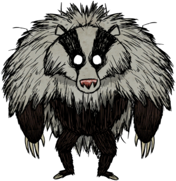
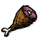

Bearger

Bearger is a station boss who apears after summer usually between day 3 and 7 after the summer ends, he has 6000hp  , deals 87.5 damage for players and 175 damage for mobs, his damage hits in a area of atack, he also has a -400 sanity
, deals 87.5 damage for players and 175 damage for mobs, his damage hits in a area of atack, he also has a -400 sanity  loss while in combat
loss while in combat
Kiting pattern
Phase 1:
Attack 1: hit 1 attack first then: bait, 3 attacks, back, 3 attacks, back, 3 attacks, back bait again
Attack 2: back
Safe kiting pattern
Phase 1:
Attack 1: hit 1 attack first then: bait, 2 attacks, back, 2 attacks, back, 2 attacks, back bait again
Attack 2: back
Full gameplay loop
Explanation
Bearger always does 3 swings and then a stomp, his swing hit take off your current weapon and throw it away, his stomp does not, you will always kite him in the same way the whole fight
Tanking Strategy
Itens required
3x  1x
1x
Full Gameplay loop
Explanation
Since every swing atack takes off your current weapon every time he gets his arm up you click in your weapon to take off of your inventory weapon slot, and after taking the damage you click again to put it in your inventory weapon slot again to prevent your item to go flying, this is the most effective way to tanking a boss like him, witch was made to not being abble to get tanked